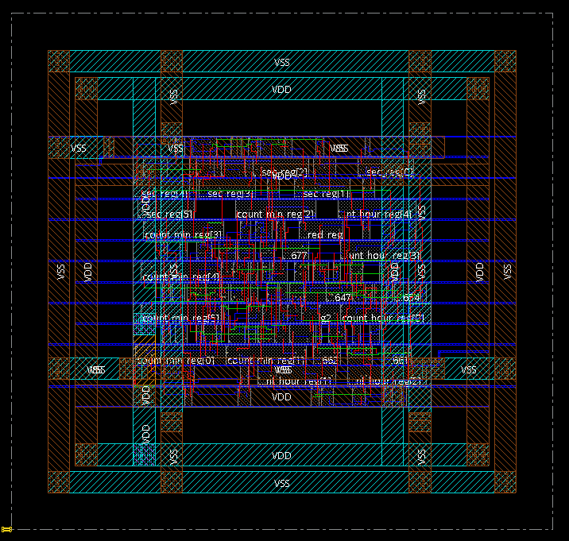
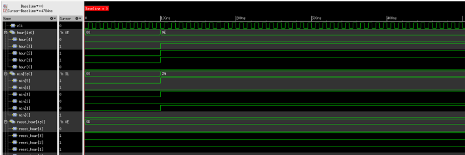
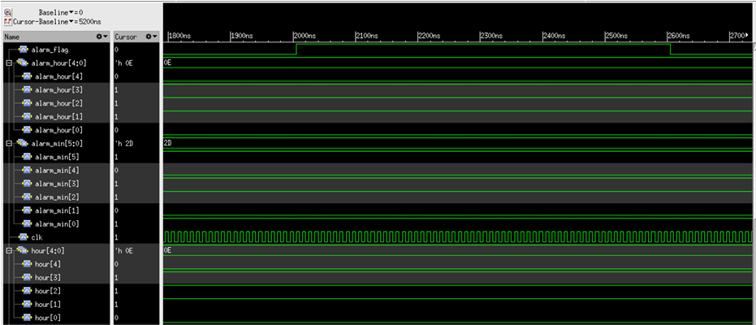
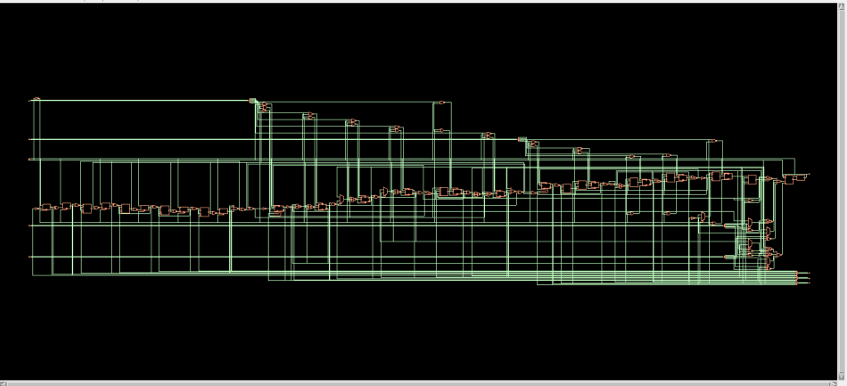
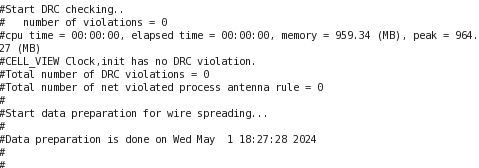
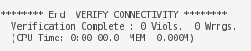

Overview
The clock counts seconds, minutes and hours, can be reset to a chosen time, and raises an alarm flag for one minute when the current time matches a preset alarm time. The design was written in Verilog, checked with a testbench, synthesized and laid out.
Problem statement
The goal was to practise the full digital IC flow on a design small enough to verify completely: writing correct sequential logic, proving it with simulation, and checking that the synthesized and placed design meets timing and design rules.
Engineering objectives
- Create a Verilog alarm clock with hour, minute and second outputs.
- Reset the clock to a specified hour and minute on a reset signal, and trigger an alarm when the time matches the preset alarm.
- Verify the design with a testbench and waveforms in Cadence.
- Run RTL synthesis with slow and fast libraries and produce power, area and gate reports, then complete the layout.
System architecture
The Clock module has six inputs and four outputs. Minutes and seconds need 6 bits (up to 59) and hours need 5 bits (up to 23). Three registers hold the current time and a fourth holds the alarm state; all update on the rising edge of clk or rst.
| Port | Direction | Width | Purpose |
|---|---|---|---|
| clk | Input | 1 | Clock; each rising edge advances one second |
| rst | Input | 1 | Reset to the preset hour and minute |
| reset_min / reset_hour | Input | 6 / 5 | Time loaded on reset |
| alarm_min / alarm_hour | Input | 6 / 5 | Alarm time |
| sec / min / hour | Output | 6 / 6 / 5 | Current time |
| alarm_flag | Output | 1 | High for one minute when the time matches the alarm |
Methodology
- RTL design: wrote the counter and alarm logic in Verilog HDL.
- Verification: a testbench generated a 10 ns clock (each period standing for one second), applied a reset to 14:42 and set the alarm to 14:45, and the waveforms were checked.
- Constraints: clock period 10, rise/fall transition and uncertainty 0.1, and maximum input and output delays of 1.0 relative to the clock.
- RTL synthesis: synthesized in Cadence with the slow (worst-case) and fast (best-case) tsmc18 libraries and generated power, area, gate-count and DFT reports.
- Layout: placed and routed the design, then ran timing, DRC and connectivity verification.
Hardware and software
Hardware
- None. Digital IC design flow.
Software & tools
- Verilog HDL
- Cadence simulation and RTL synthesis tools
- Cadence layout and verification tools
- tsmc18 standard-cell libraries (slow.lib, fast.lib)
Implementation photographs

Results





Performance metrics
| Synthesis result | slow.lib | fast.lib |
|---|---|---|
| Cells | 110 | 111 |
| Total cell area | 2804.155 | 2810.808 |
| Leakage power (nW) | 87,210.108 | 67,003.461 |
| Internal power (nW) | 93,381.764 | 380,555.031 |
| Net power (nW) | 72,436.858 | 112,589.092 |
| Switching power (nW) | 165,818.622 | 493,144.123 |
| DFT violations | 0 | 0 |
Key findings
- The testbench confirmed the reset and alarm behaviour: the alarm flag stayed high for exactly one simulated minute and cleared at 14:46.
- The fast library produced higher internal and switching power but lower leakage than the slow library, with almost the same cell count and area.
- The final layout passed DRC and connectivity checks with no violations, meaning it met the design rules for fabrication.
Links
A GitHub repository for this project is being prepared. Until then, the full project report is available on request.